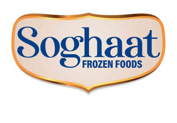

Trade Mark Journal No.2026/011 13 March 2026
UK00004345398 25 February 2026 (29,30,31)

- Class 29
- Frozen chicken; Frozen turkey; Frozen meat; Meat, frozen; Frozen spinach; Frozen vegetables; Frozen eggs; Frozen fish; Frozen seafood; Frozen fruits; Frozen poultry; Frozen chips; Frozen shellfish; Deep frozen chicken; Frozen cooked fish; Frozen meat products; Fish products being frozen; Frozen sweet corn; Frozen celery cabbages; Frozen french fries; Frozen frog legs; Frozen meals consisting primarily of chicken; Frozen pre-packaged entrees consisting primarily of seafood; Frozen appetizers consisting primarily of chicken; Frozen meals consisting primarily of fish; Frozen meals consisting primarily of meat; Frozen bamboo shoots; Frozen meals consisting primarily of vegetables; Frozen meals consisting primarily of poultry; Frozen appetizers consisting primarily of seafood; Frozen prepared meals consisting principally of vegetables; Deep-frozen poultry; Freeze-dried vegetables; Freeze-dried meat; Frozen brackens (Gosari); Vegetable puree; Vegetable purees; Quick-frozen vegetable dishes; Chicken; Fried chicken; Chicken meatballs; Cooked chicken; Chicken burgers; Chicken sausages; Chicken wings; Chicken nuggets; Chicken jerky; Grilled chicken (Yakitori); Chicken breast fillets; Chicken pate; Chicken legs; Chicken pieces; Meat burgers; Seafood products; Fish, seafood and molluscs, not live; Steaks of fish; Fish steaks; Tuna fish; Fish steak; Veggie burger patties; Burgers; Turkey burger patties; Soy burger patties; Turkey burgers; Vegetable burgers; Waffle fries; Hotdog sausages; Sausages; Uncooked sausages; Air-dried sausages; Shish kabobs; Lamb skewers.
- Class 30
- Frozen yogurt; Frozen ices; Frozen yoghurt; Frozen custards; Frozen waffles; Frozen pizzas; Frozen yoghurts; Frozen pizza; Frozen lollipops; Frozen cakes; Frozen confections; Frozen pastries; Frozen confectionery; Frozen dough; Frozen yogurt pies; Frozen pancakes; Frozen pastry; Ice [frozen water]; Frozen yogurt confections; Frozen yogurt cakes; Frozen yogurt [confectionery ices]; Yogurt (Frozen -) [confectionery ices]; Deep frozen pasta; Yoghurt (Frozen -) [confectionery ices]; Frozen yoghurt [confectionery ices]; Frozen pizza crusts; Frozen dairy confections; Sauces for frozen fish; Frozen prepared rice; Ice, ice creams, frozen yogurts and sorbets; Confectionery in frozen form; Frozen pastry stuffed with vegetables; Frozen confectionery containing ice cream; Frozen pastry stuffed with meat; Frozen brownie dough; Frozen pastry sheets; Frozen biscotti dough; Frozen pizza crusts made of cauliflower; Frozen confections on a stick; Frozen pastry stuffed with meat and vegetables; Frozen cookie dough; Frozen French toast; Mixtures for making frozen confections; Frozen prepared rice with seasonings; Frozen French toast sticks; Frozen meals consisting primarily of pasta; Frozen prepared rice with seasonings and vegetables; Frozen meals consisting primarily of rice; Ice cubes; Ice; Edible ice; Chilled pizzas; Shaved ice with sweetened red beans; Fruit ice; Ice milk [ice cream]; Ice confections; Fresh pies; Uncooked pizzas; Ice lollies; Dried pasta foods; Ice cream sandwiches; Ice lollies containing milk; Water ice; Sorbets [water ices]; Dried and fresh pastas, noodles and dumplings; Vegetable pastes [sauces]; Fish dumplings; Minced garlic; Garlic puree; Ginger puree [condiment]; Samosas; Naan bread; Chinese stuffed dumplings (gyoza, cooked); Filo pastry.
- Class 31
- Fresh ice cream beans; Fresh blueberries; Peas, fresh; Fresh peas.
Gohar Ayub Khan